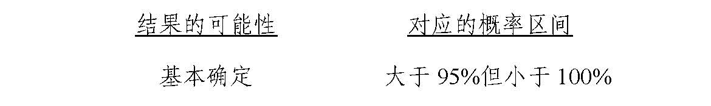
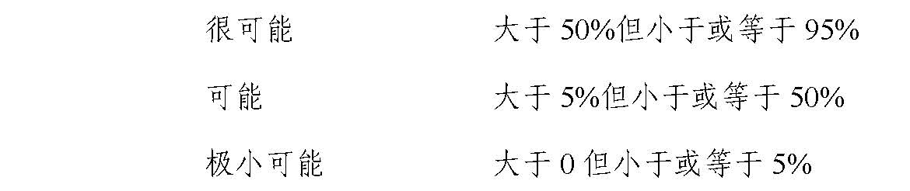

《企业会计准则第13号——或有事项》解释（征求意见稿）
为了便于本准则的应用和操作，现就以下问题作出解释：（1）或有事项的基本特征；（2）或有事项相关义务确认为预计负债的条件；（3）亏损合同的相关义务确认为预计负债；（4）重组义务确认为预计负债。
一、或有事项的基本特征
本准则第二条规定，或有事项是指过去的交易或者事项形成的，其结果须由某些未来事项的发生或不发生才能决定的不确定事项。
（一）由过去交易或事项形成，是指或有事项的现存状况是过去交易或事项引起的客观存在。
例如，未决诉讼虽然是正在进行当中的诉讼，但该诉讼是企业因过去的经济行为导致起诉其他单位或被其他单位起诉。这是现存的一种状况而不是未来将要发生的事项。未来可能发生的自然灾害、交通事故、经营亏损等，不属于或有事项。
（二）结果具有不确定性，是指或有事项的结果是否发生具有不确定性，或者或有事项的结果预计将会发生，但发生的具体时间或金额具有不确定性。
例如，债务担保事项在担保方到期是否一定承担和履行连带责任，需要根据被担保方债务到期时能否按时还款加以确定。这一事项的结果在担保协议达成时具有不确定性。
（三）由未来事项决定，是指或有事项的结果只能由未来不确定事项的发生或不发生才能决定。
例如，未决诉讼只有等到法院判决才能决定其结果；债务担保事项只有在被担保方到期无力还款时，企业（担保方）才承担连带责任。
常见的或有事项主要包括：未决诉讼或仲裁、债务担保、产品质量保证（含产品安全保证）、承诺、亏损合同、重组义务、商业承兑汇票背书转让或贴现等。其中，亏损合同、重组义务是本准则特别规定的或有事项。
二、或有事项相关义务确认为预计负债的条件
本准则第四条规定了或有事项相关义务确认预计负债应当同时具备的条件：
（一）该义务是企业承担的现时义务，是指与或有事项相关的义务是在企业当前条件下已承担的义务。企业没有其他现实的选择，只能履行该现时义务，如法律要求企业履行、有关各方形成企业将履行现时义务的合理预期等。
（二）履行该义务很可能导致经济利益流出企业，是指履行与或有事项相关的现时义务时，导致经济利益流出企业的可能性超过50%但尚未达到基本确定的程度。
履行或有事项相关义务导致经济利益流出企业的可能性，通常应当结合下列情况加以判断：


（三）该义务的金额能够可靠地计量，是指与或有事项相关的现时义务的金额能够合理地估计。估计或有事项相关现时义务的金额，应当考虑下列因素：
1.企业应当充分考虑与或有事项有关的风险和不确定性，并在低估和高估预计负债金额之间寻找平衡点。
2.相关现时义务的金额通常应当等于未来应支付的金额。未来应支付金额与其现值相差较大的，如油井或核电站的弃置费用等，应当按照未来应支付金额的现值确定。
3.企业应当考虑可能影响履行现时义务所需金额的相关未来事项，如未来技术进步、相关法规出台等。
4.企业不应考虑预期处置相关资产的利得。
三、亏损合同的相关义务确认为预计负债
本准则第八条规定，待执行合同变成亏损合同的，该亏损合同产生的义务满足规定条件的，应当确认为预计负债。
企业与其他企业签订的商品销售合同、劳务提供合同、让渡资产使用权合同、租赁合同等，均属于待执行合同。待执行合同不属于本准则规范的内容。待执行合同变为亏损合同的，应当作为本准则规范的或有事项。
企业在履行合同义务过程中发生的成本可能出现超过预期经济利益的情况时，待执行合同即变成了亏损合同，此时，如果与该合同相关的义务不需支付任何补偿即可撤销，通常不存在现时义务，不应确认预计负债。如果与该合同相关的义务不可撤销，企业就存在了现时义务，同时满足该义务很可能导致经济利益流出企业和金额能够可靠地计量的，通常应当确认预计负债。
例如，某公司20×7年1月采用经营租赁方式租入生产线生产产品，租赁期3年，生产的产品预计每年均可获利。20×8年12月，市政规划要求公司迁址，加之宏观政策调整该公司决定停产上述产品，原经营租赁合同为不可撤销合同，还要持续1年，生产线无法转租给其他单位。此时，该公司执行原经营租赁合同发生的费用很可能超过预期获得的经济利益，该租赁合同变为亏损合同，应当在20×8年12月31日根据未来期间（20×9年）应支付的租金确认预计负债。
待执行合同变为亏损合同时，合同存在标的资产的，应当对标的资产进行减值测试并按规定确认减值损失，通常不确认预计负债；合同不存在标的资产的，亏损合同相关义务满足规定条件时，应当确认预计负债。
例如，商品销售合同属于待执行合同。在其售价低于成本时，该合同即变为亏损合同，属于本准则规范的或有事项。该合同存在标的资产（存货）的，应当确认减值损失和存货跌价准备，不确认预计负债；如果合同不存在标的资产（存货），企业应在满足确认条件时确认预计负债。
四、重组义务确认为预计负债
本准则第十条规定，企业承担的重组义务满足规定条件的，应当确认为预计负债。
（一）重组事项
重组是指企业制定和控制的，将显著改变企业组织形式、经营范围或经营方式的计划实施行为。属于重组的事项主要包括：
1.出售或终止企业的部分业务；
2.对企业的组织结构进行较大调整；
3.关闭企业的部分营业场所，或将营业活动由一个国家或地区迁移到其他国家或地区。
（二）重组与企业合并和债务重组的区别
重组通常是企业内部资源的调整和组合，谋求现有资产效能的最大化；企业合并是在不同企业之间的资本重组和规模扩张；债务重组是债权人对债务人作出让步，债务人减轻债务负担，债权人尽可能减少损失。
例如，某公司董事会决定关闭一个事业部。如果有关决定尚未传达到受影响的各方，也未采取任何措施实施该项决定，表明该公司没有承担重组义务，不应确认预计负债；如果有关决定已经传达到受影响的各方，各方预期公司将关闭该事业部，通常表明公司开始承担重组义务，同时满足预计负债确认条件的，应当确认预计负债。